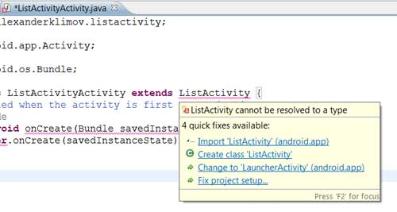
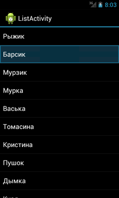
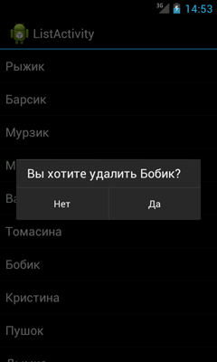

/* Моя кошка замечательно разбирается в программировании. Стоит мне объяснить проблему ей - и все становится ясно. */
John Robbins, Debugging Applications, Microsoft Press, 2000

/* Моя кошка замечательно разбирается в программировании. Стоит мне объяснить проблему ей - и все становится ясно. */
John Robbins, Debugging Applications, Microsoft Press, 2000
Список за пять минут
Обработка нажатий
Долгое нажатие и удаление элемента списка
Заключение
Исходный код
Своя разметка
Переключаемся между двумя списками
Очень часто экран приложения состоит из обычного прокручиваемого списка. Например, это может быть список контактов, дни месяца, ассортимент товара, технические характеристики модели и так далее. Android позволяет создать такой список за пару минут.
В предыдущих примерах мы встречали в коде строчку public class HelloWorld extends Activity, что означало наследование от специального класса Activity. Существует ещё один специальный класс ListActivity, специально разработанный для списков.
Создадим новый стандартный проект типа Hello, World. Мы знаем, что этом проекте есть файл main.xml, отвечающий за разметку элементов на экране. Класс ListActivity разработан таким образом, что на экране есть только прокручиваемый список и ему не нужна дополнительная разметка. Поэтому набираемся смелости, выбираем в папке res/layout файл main.xml и через правую кнопку мыши удаляем его.
Всё пропало! Теперь ничего не запустится! Don't panic! Открываем java-файл и видим, что Eclipse ругается на строчку setContentView(R.layout.main);, что вполне объяснимо. Мы ведь только что сами удалили файл разметки. Ещё раз набираемся смелости и удаляем эту строчку, она там тоже больше не нужна.
Теперь нужно поставить Android в известность, что мы собираемся использовать экран со списком, поэтому меняем в строчке public class ВашеНазваниеActivity extends Activity слово Activity на ListActivity. Eclipse прикинется дурачком и подчеркнёт незнакомое ему слово. Подводим к слову указатель мыши и ждём появления всплывающей подсказки. Выбираем первый вариант Import 'ListActivity' (android.app).

В результате в секции import нашего файла появится новая строка. Там же мы увидим строку, которую можно безболезненно удалить:
import android.app.Activity;
Подготовительные работы закончены. Теперь пришло время подготовить сам список для отображения его на экране. Создадим массив строк:
final String[] catnames = new String[] { "Рыжик", "Барсик", "Мурзик",
"Мурка", "Васька", "Томасина", "Бобик", "Кристина", "Пушок",
"Дымка", "Кузя", "Китти", "Барбос", "Масяня", "Симба" };
К слову сказать, вы можете создать массив строк в ресурсах, в этом случае вам будет проще редактировать список, не затрагивая код программы. Когда наберётесь опыта, то сами решите, какой вариант лучше.
А теперь начинается самое важное. У нас есть намерение создать экран со списком и сами слова для списка. Необходим некий посредник, который свяжет эти звенья в одно целое. Для подобных целей в Android существует понятие адаптера данных и его определение выглядит так:
new ArrayAdapter(Context context, int textViewResourceId, String[] objects)
Адаптеру нужно от вас три вещи: явки, пароли, деньги, текущий контекст, идентификатор ресурса с разметкой для каждой строки, массив строк.
Мы можем ему предложить ListActivity в качестве текущего контекста (можно использовать ключевое слово this), готовый системный идентификатор ресурса и созданный массив строк. А выглядеть это будет так:
private ArrayAdapter<String> adapter;
adapter = new ArrayAdapter<String>(this,
android.R.layout.simple_list_item_1, catnames);
Обратите внимание на строчку android.R.layout.simple_list_item_1. В ней уже содержится необходимая разметка для элементов списка, если вас не устраивает системная разметка, то можете создать собственную разметку в xml-файле и подключить её.
Осталось сделать заключительный штрих - подключить адаптер:
setListAdapter(adapter);
Запускаем проект и любуемся своим списком. Он прекрасно прокручивается и каждый пункт подсвечивается при нажатии.

Но пока приложение никак не реагирует на наши нажатия. Исправим ситуацию. Нам нужно знать, на каком пункте списка осуществляется нажатие. Для этой цели существует специальный интерфейс OnItemClickListener с методом onItemClick(). Вот как это делается в Eclipse - набираем название интерфейса
OnItemClickListener itemListener = new OnItemClickListener(){}
}
Когда Eclipse подчеркнёт первое слово, то импортируем нужный класс. Далее подведём курсор ко второму слову new OnItemClickListener. Нам будет предложено добавить метод (Add unimplemented method). Соглашаемся и получаем заготовку:
OnItemClickListener itemListener = new OnItemClickListener() {
@Override
public void onItemClick(AdapterView<?> arg0, View arg1, int arg2,
long arg3) {
// TODO Auto-generated method stub
}
};
В методе onItemClick() вы видите четыре аргумента с малоинформативными именами arg0, arg1, arg2, arg3. Возьмите за правило менять их на более вменяемые имена:
public void onItemClick(AdapterView<?> parent, View v, int position,
long id) {
Очень часто в книгах, на форумах, в чужом коде вы будете видеть именно такой код, в котором понятно, что parent указывает на родителя, v на элемент View, position - позицию элемента в списке, а id - его идентификатор.
Осталось только прописать код для события - давайте выведем всплывающее сообщение, который будет содержать текст выбранного элемента списка.
OnItemClickListener itemListener = new OnItemClickListener() {
@Override
public void onItemClick(AdapterView<?> parent, View v,
int position, long id) {
// TODO Auto-generated method stub
Toast.makeText(
getApplicationContext(),
"Вы выбрали "
+ parent.getItemAtPosition(position).toString(),
Toast.LENGTH_SHORT).show();
}
};
Нужно сообщить окну, что ему нужно следить на нажатиями пользователя:
getListView().setOnItemClickListener(itemListener);
Запускаем программу и начинаем щёлкать по любой позиции списка - мы получим соответствующее сообщение. Вы можете использовать свой код - вызывать новое окно, проигрывать музыку и т.д.
На самом деле существует ещё метод onListItemClick(). Сейчас я стараюсь использовать именно его. Сравните два куска кода.
// Старый способ
@Override
public void onCreate(Bundle savedInstanceState) {
...
getListView().setOnItemClickListener(myOnItemClickListener);
}
OnItemClickListener myOnItemClickListener = new OnItemClickListener() {
@Override
public void onItemClick(AdapterView<?> parent, View view, int position,
long id) {
// Ваш код
}
};
// Новый код
protected void onListItemClick(android.widget.ListView l, View v,
int position, long id) {
// Ваш код
};
Второй код лаконичнее и проще набрать через автозаполнение.
Расширим возможности списка и научимся обрабатывать долгие нажатия, а также удалять некоторые элементы списка.
Для долгого нажатия существует интерфейс OnItemLongClickListener с методом onItemLongClick(), практически совпадающий с интерфейсом для простого нажатия. Различие заключается в том, что добавлено слово Long и метод возвращает значение. Так как мы собираемся обрабатывать долгие нажатия, то строчку return false; необходимо заменить на return true;.
Далее внесём небольшое изменение в адаптер данных. Сам по себе массив строк является неизменяемым, и чтобы мы могли удалять пункты из списка, необходимо сконвертировать его в специальный объект ArrayList<String>, который является изменяемым, а уже новый объект мы отдадим адаптеру:
ArrayList<String> list = new ArrayList<String>(Arrays.asList(catnames));
adapter = new ArrayAdapter<String>(this,
android.R.layout.simple_list_item_1, list); //вместо catnames стало list
Далее прописываем необходимый код для удаления выбранного пункта меню и запускаем программу. Прокручивая список, с удивлением замечаем, что среди кошачьих имён затесался какой-то сраный пёсик Бобик. Пробуем удалить его. Получилось! Теперь наш список выглядит правильно.

На всякий случай еще раз просмотрите список и если увидите чужеродное имя, то удалите его.
Поначалу эта статья может показаться вам сложной. Не отчаивайтесь, возьмите её как шаблон и на первых порах просто копируйте куски кода. Позже с практикой вы лучше разберётесь в работе со списком.
В данном материале вы познакомились с простым и быстрым способом создания списка на основе системных настроек. Но, если вам нужны более навороченные списки, то изучите статью про элемент управления ListView, а также статью Списки со значками.
package ru.alexanderklimov.listactivity;
import java.util.ArrayList;
import java.util.Arrays;
import android.app.AlertDialog;
import android.app.ListActivity;
import android.content.Context;
import android.content.DialogInterface;
import android.os.Bundle;
import android.view.View;
import android.widget.AdapterView;
import android.widget.AdapterView.OnItemClickListener;
import android.widget.AdapterView.OnItemLongClickListener;
import android.widget.ArrayAdapter;
import android.widget.Toast;
public class ListActivityActivity extends ListActivity {
// определяем массив типа String
final String[] catnames = new String[] { "Рыжик", "Барсик", "Мурзик",
"Мурка", "Васька", "Томасина", "Бобик", "Кристина", "Пушок",
"Дымка", "Кузя", "Китти", "Барбос", "Масяня", "Симба" };
private ArrayAdapter<String> adapter;
private String selectedItem;
private final Context context = this;
/** Called when the activity is first created. */
@Override
public void onCreate(Bundle savedInstanceState) {
super.onCreate(savedInstanceState);
OnItemClickListener itemListener = new OnItemClickListener() {
@Override
public void onItemClick(AdapterView<?> parent, View v,
int position, long id) {
// TODO Auto-generated method stub
Toast.makeText(
getApplicationContext(),
"Вы выбрали "
+ parent.getItemAtPosition(position).toString(),
Toast.LENGTH_SHORT).show();
}
};
OnItemLongClickListener itemLongListener = new OnItemLongClickListener() {
@Override
public boolean onItemLongClick(AdapterView<?> parent, View v,
int position, long id) {
// сохраним выбранный пункт в глобальной переменной
selectedItem = parent.getItemAtPosition(position).toString();
// Build new AlertDialog
AlertDialog.Builder builder = new AlertDialog.Builder(context);
builder.setMessage("Вы хотите удалить " + selectedItem
+ "?");
builder.setCancelable(false);
builder.setPositiveButton("Да",
new DialogInterface.OnClickListener() {
@Override
public void onClick(DialogInterface dialog,
int which) {
adapter.remove(selectedItem);
adapter.notifyDataSetChanged();
Toast.makeText(getApplicationContext(),
selectedItem + " удалён.",
Toast.LENGTH_SHORT).show();
}
});
builder.setNegativeButton("Нет",
new DialogInterface.OnClickListener() {
@Override
public void onClick(DialogInterface dialog,
int which) {
dialog.cancel();
}
});
// выводим диалоговое окно
builder.show();
return true;
}
};
ArrayList<String> list = new ArrayList<String>(Arrays.asList(catnames));
adapter = new ArrayAdapter<String>(this,
android.R.layout.simple_list_item_1, list);
// присваиваем адаптер списку
setListAdapter(adapter);
getListView().setOnItemClickListener(itemListener);
getListView().setOnItemLongClickListener(itemLongListener);
}
}
Когда в самом начале статьи я говорил, что для ListActivity не нужен шаблон main.xml, то немножко лукавил. На самом деле вы можете подключить свой шаблон, но с одним условием - шаблон должен содержать элемент ListView с идентификатором @android:id/list.
Можно заново создать файл main.xml, если вы его удалили, как вас просили, или файл с другим именем, например, customlist.xml:
<?xml version="1.0" encoding="utf-8"?>
<LinearLayout xmlns:android="http://schemas.android.com/apk/res/android"
android:layout_width="fill_parent"
android:layout_height="fill_parent"
android:orientation="vertical" >
<ListView
android:id="@android:id/list"
android:layout_width="wrap_content"
android:layout_height="wrap_content"
android:background="#00FF00" />
<TextView
android:id="@android:id/empty"
android:layout_width="wrap_content"
android:layout_height="wrap_content"
android:text="List is Empty" />
</LinearLayout>
Я специально установил зелёный цвет для фона, чтобы вы поверили, что будет запускаться наш шаблон вместо системного, а TextView нужен для отображения текста, если список будет пустым. Осталось добавить строчку кода, который подключает шаблон:
setContentView(R.layout.customlist);
Запустите проект и убедитесь, что загружается наш шаблон. Если вы зададите пустой массив, то вместо списка вы увидите TextView с текстом List is Empty.
Возможно, вам понадобится переходить из одного списка в другой. Например, первый список представляет собой месяцы, а второй - дни недели.
public class TestActivity extends ListActivity {
String[] month = { "Январь", "Февраль", "Котомарт", "Апрель", "Май",
"Июнь", "Июль", "Август", "Сентябрь", "Октябрь", "Ноябрь",
"Декабрь" };
String[] DayOfWeek = new String[] { "Понедельник", "Вторник", "Среда",
"Четверг", "Котопятница", "Субкота", "Воскресенье" };
// Создадим два адаптера
ArrayAdapter<String> monthAdapter, weekOfDayAdapter;
String strMonth, strDayOfWeek;
@Override
public void onCreate(Bundle savedInstanceState) {
super.onCreate(savedInstanceState);
// setContentView(R.layout.activity_test);
monthAdapter = new ArrayAdapter<String>(this,
android.R.layout.simple_list_item_1, month);
weekOfDayAdapter = new ArrayAdapter<String>(this,
android.R.layout.simple_list_item_1, DayOfWeek);
setListAdapter(monthAdapter);
}
@Override
protected void onListItemClick(ListView l, View v, int position, long id) {
// TODO Auto-generated method stub
super.onListItemClick(l, v, position, id);
if (getListAdapter() == monthAdapter) {
strMonth = (String) getListView().getItemAtPosition(position);
setListAdapter(weekOfDayAdapter);
weekOfDayAdapter.notifyDataSetChanged();
} else {
strDayOfWeek = (String) getListView().getItemAtPosition(position);
Toast.makeText(getBaseContext(), strMonth + ": " + strDayOfWeek,
Toast.LENGTH_LONG).show();
setListAdapter(monthAdapter);
monthAdapter.notifyDataSetChanged();
}
}
}
Мы создали два адаптера через массивы строк. Сначала используем первый адаптер. При выборе элемента списка через метод onListItemClick() подключаем другой адаптер. Чтобы изменения отразились на экране, неоходимо вызвать метод notifyDataSetChanged().

Газовый котел отопления газлюкс неисправности здесь еще больше.; проекты деревянных домов с мансардой из бревна, компания дерева строй осуществляет проектирование и .; банкетный зал кировский район, a .; двери 1200 2050, bollard .; избегающее расстройство личности ; Чем монтажная пена от пенопласта в баллонах отличается жидкий пенопласт в баллонах .; г пушкин рестораны ; проволока с полимерным покрытием, grand .; выездная диагностика bmw, audi vw .